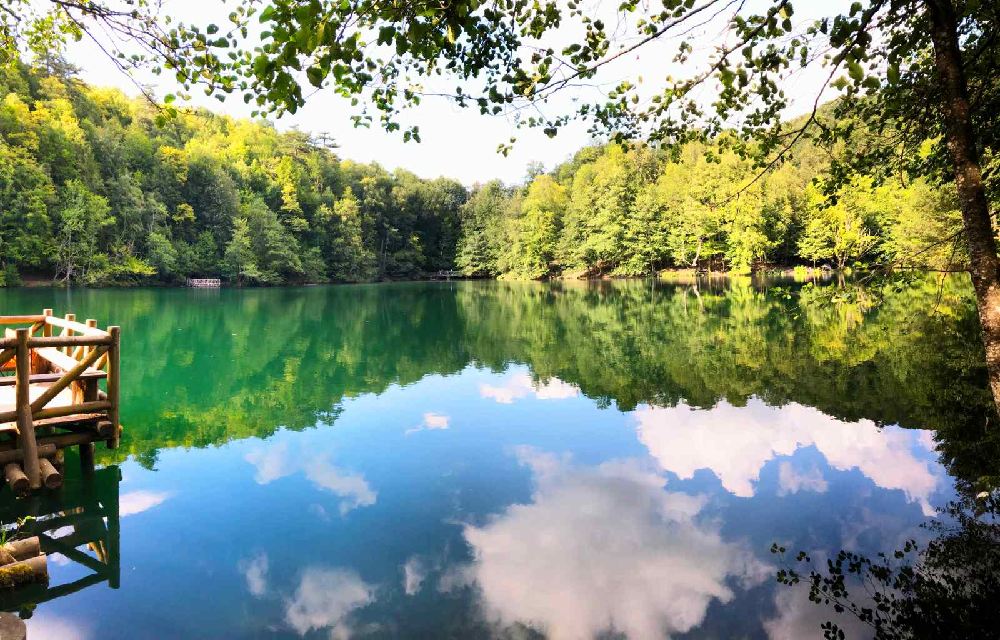
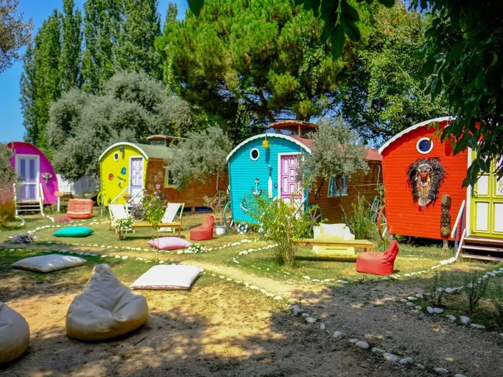

Yedigöller, BOLU

Yedigöller Milli Parkı’nda büfe, restoran gibi olanaklar yok.
Bu nedenle hazırlıklı gelmek gerekiyor.
Sadece piknikçiler için tahta masalar var. Su, WC, aydınlatma var.
Açık ateş yakılamıyor fakat alanda taştan yapılma ateş yakma bölümleri mevcut.
Bambu Kamp, Köyceğiz, MUĞLA

Bambu Kamp çadır ve karavan alanı denize sıfır bir kamp alanı.
Bilenler bilir Bambu Kamp'ın bulunduğu Muğla Köyceğiz ilçesine bağlı Ekincik Koyu,
eşsiz doğası ve sessizliği ile siz misafirleri yıllardır cezbedegelmiş henüz el değmemiş doğal bir harikadır.
Koyun en yakın ilçe merkezine uzaklığının 35 km oluşu, buraya sadece bilenlerin gelmesi ile hala bakir oluşunu korumaktadır.
Abant Gölü, BOLU

Abant Tabiat Parkı, Abant Gölü Tabiat Parkı olarak da bilinmektedir.
Bolu‘da kamp ve piknik yapmak isteyenler tarafından yoğun olarak ziyaret edilmektedir.
Göl, orman ve dağ manzarasının birleştiği noktada, doğa ile iç içe vakit geçirmek mümkündür.
Kabak Koyu, Fethiye, MUĞLA

Fethiye’ye bağlı Kabak Koyu’nda kamping adına çok fazla seçenek var.
Burasını sadece kampa ayrılmış bir koy olarak da düşünebilirsiniz.
Büyük işletmeler yok. Genelde bungalow ve çadır kampı seçenekleri var.
Ender de olsa butik otel tarzında işletmeler var fakat onlar da doğal dokuya uyum sağlıyor.
Bütçenize göre dilediğiniz kampta kalabilirsiniz.
Vagon Camping , Gökçeada

Doğanın güzelliklerini keşfederken eğlenceli renklere tanıklık edeceğiniz
bir kamp tatili için Gökçeada’nın gözdesi Vagon Camping’i tercih edebilirsiniz.
Adanın merkezinde bulunan tesis olabildiğince gürültüden de izole olmayı başarmış.
Bu sayede misafirlerine eğlencenin yanı sıra sessizlik ve huzuru vadeden bir kamp alanı olduğunu söyleyebiliriz.
Geniş bir arazi üzerine kurulu Vagon Camping’te hem çadır hem de bungalov konaklama hizmeti veriliyor.